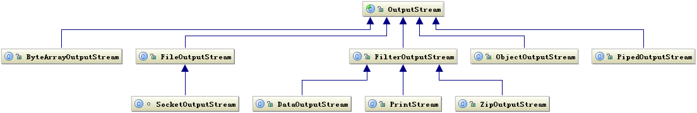
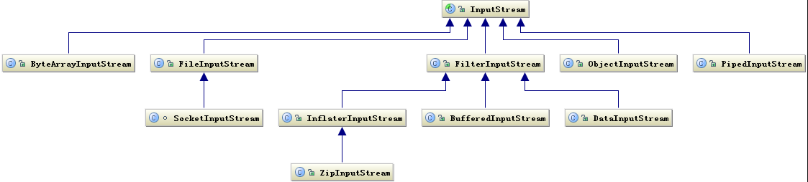

java io 相关总结
磁盘操作
public class File
implements Serializable, Comparable<File>
构造方法
public File(String pathname):通过将给定的路径名字符串转换为抽象路径名来创建新的 File实例。public File(String parent, String child):从父路径名字符串和子路径名字符串创建新的 File实例。public File(File parent, String child):从父抽象路径名和子路径名字符串创建新的 File实例。
常用方法
- 获取功能
public String getAbsolutePath():返回此File的绝对路径名字符串。public String getPath():将此File转换为路径名字符串。public String getName():返回由此File表示的文件或目录的名称。public long length():返回由此File表示的文件的长度。
- 判断功能
public boolean exists():此File表示的文件或目录是否实际存在。public boolean isDirectory():此File表示的是否为目录。public boolean isFile():此File表示的是否为文件。
- 创建删除功能
public boolean createNewFile():当且仅当具有该名称的文件尚不存在时,创建一个新的空文件。public boolean delete():删除由此File表示的文件或目录。public boolean mkdir():创建由此File表示的目录。public boolean mkdirs():创建由此File表示的目录,包括任何必需但不存在的父目录。
- 遍历功能
public String[] list():返回一个String数组,表示该File目录中的所有子文件或目录。public File[] listFiles():返回一个File数组,表示该File目录中的所有的子文件或目录。
字节流
OutputStream
public abstract class OutputStream implements Closeable, Flushable

它是个抽象类，提供的方法有：
public void close():关闭此输出流并释放与此流相关联的任何系统资源。public void flush():刷新此输出流并强制任何缓冲的输出字节被写出。public void write(byte[] b):将 b.length字节从指定的字节数组写入此输出流。public void write(byte[] b, int off, int len):从指定的字节数组写入 len字节,从偏移量 off开始输出到此输出流。public abstract void write(int b):将指定的字节输出流。
FileOutputStream类
OutputStream 有很多子类,我们从最简单的一个子类开始。java.io.FileOutputStream 类是文件输出流,用于将数据写出到文件。
构造方法
public FileOutputStream(File file):创建文件输出流以写入由指定的 File对象表示的文件。public FileOutputStream(String name): 创建文件输出流以指定的名称写入文件。
常用方法
- 写出方法
write(int b)：每次可以写出一个字节数据write(byte[] b)：每次可以写出数组中的数据，使用"im String".getBytes()转换为字节数组write(byte[] b, int off, int len)：写出指定长度字节数组，每次写出从off索引开始,len个字节。
- 数据追加
public FileOutputStream(File file, boolean append): 创建文件输出流以写入由指定的 File对象表示的文件。public FileOutputStream(String name, boolean append): 创建文件输出流以指定的名称写入文件。
- 写出换行
fos.write("\r\n".getBytes());
InputStream
public abstract class InputStream implements Closeable

它是个抽象类，提供的方法有：
public void close():关闭此输入流并释放与此流相关联的任何系统资源。public abstract int read(): 从输入流读取数据的下一个字节。public int read(byte[] b): 从输入流中读取一些字节数,并将它们存储到字节数组 b中 。
FileInputStream类
java.io.FileInputStream 类是文件输入流,从文件中读取字节。
构造方法
FileInputStream(File file): 通过打开与实际文件的连接来创建一个FileInputStream,该文件由文件系统中的 File对象 file命名。FileInputStream(String name): 通过打开与实际文件的连接来创建一个FileInputStream,该文件由文件系统中的路径名 name命名。
常用方法
public int read():每次可以读取一个字节的数据,提升为int类型,读取到文件末尾,返回 -1public int read(byte b[])：每次读取b的长度个字节到数组中,返回读取到的有效字节个数,读取到末尾时,返回 -1
案例
复制图片的小案例：
public class Copy {
public static void main(String[] args) throws IOException {
// 1.创建流对象
// 1.1 指定数据源
FileInputStream fis = new FileInputStream("D:\\test.jpg");
// 1.2 指定目的地
FileOutputStream fos = new FileOutputStream("test_copy.jpg");
// 2.读写数据
// 2.1 定义数组
byte[] b = new byte[1024];
// 2.2 定义长度
int len;
// 2.3 循环读取
while ((len = fis.read(b))!=‐1) {
// 2.4 写出数据
fos.write(b, 0 , len);
}
// 3.关闭资源
fos.close();
fis.close();
}
}
字符流
Writer
java.io.Writer 抽象类是表示用于写出字符流的所有类的超类,将指定的字符信息写出到目的地。它定义了字节输出流的基本共性功能方法。
void write(int c)写入单个字符。void write(char[] cbuf)写入字符数组。abstract void write(char[] cbuf, int off, int len)写入字符数组的某一部分,off数组的开始索引,len写的字符个数。void write(String str)写入字符串。void write(String str, int off, int len)写入字符串的某一部分,off字符串的开始索引,len写的字符个数。void flush()刷新该流的缓冲。void close()关闭此流,但要先刷新它。
FileWriter类
java.io.FileWriter 类是写出字符到文件的便利类。构造时使用系统默认的字符编码和默认字节缓冲区。
构造方法
FileWriter(File file): 创建一个新的 FileWriter,给定要读取的File对象。FileWriter(String fileName): 创建一个新的 FileWriter,给定要读取的文件的名称。
常用方法
- 写出方法
write(int b)：每次可以写出一个字符数据write(char[] cbuf)：每次可以写出字符数组中的数据，使用"我是超人".toCharArray()转换为字节数组write(char[] cbuf, int off, int len)：写出指定长度字符数组，每次写出从off索引开始,len个字符write(String str)：写出字符串write(String str, int off, int len)：写出字符串，从off索引开始,len个字节
- 数据追加
public FileOutputStream(File file, boolean append): 创建文件输出流以写入由指定的 File对象表示的文件。public FileOutputStream(String name, boolean append): 创建文件输出流以指定的名称写入文件。
Reader
java.io.Reader 抽象类是表示用于读取字符流的所有类的超类,可以读取字符信息到内存中。它定义了字符输入流的基本共性功能方法。
public void close():关闭此流并释放与此流相关联的任何系统资源。public int read(): 从输入流读取一个字符。public int read(char[] cbuf): 从输入流中读取一些字符,并将它们存储到字符数组 cbuf中 。
FileReader类
构造方法
FileReader(File file): 创建一个新的 FileReader ,给定要读取的File对象。FileReader(String fileName): 创建一个新的 FileReader ,给定要读取的文件的名称。
常用方法
public int read():每次可以读取一个字节的数据,提升为int类型,读取到文件末尾,返回 -1public int read(char[] cbuf)：每次读取b的长度个字节到数组中,返回读取到的有效字节个数,读取到末尾时,返回 -1
案例
简单的RW操作
package com.company;
import java.io.FileReader;
import java.io.FileWriter;
import java.io.IOException;
public class Main {
public static void main(String[] args) throws IOException {
FileWriter writer = new FileWriter("a.txt");
char[] chars = "我是超人".toCharArray();
writer.write(chars);
writer.close();
//------------
FileReader reader = new FileReader("a.txt");
int len;
char[] cbuf = new char[3];
while ((len = reader.read(cbuf))!=-1){
System.out.println(new String(cbuf,0,len));
}
reader.close();
}
}
缓冲流
装饰者模式！
构造方法
public BufferedInputStream(InputStream in):创建一个 新的缓冲输入流。public BufferedOutputStream(OutputStream out): 创建一个新的缓冲输出流。public BufferedReader(Reader in):创建一个 新的缓冲输入流。public BufferedWriter(Writer out): 创建一个新的缓冲输出流。
// 创建字节缓冲输入流
BufferedInputStream bis = new BufferedInputStream(new FileInputStream("bis.txt"));
// 创建字节缓冲输出流
BufferedOutputStream bos = new BufferedOutputStream(new FileOutputStream("bos.txt"));
// 创建字符缓冲输入流
BufferedReader br = new BufferedReader(new FileReader("br.txt"));
// 创建字符缓冲输出流
BufferedWriter bw = new BufferedWriter(new FileWriter("bw.txt"));
转换流
InputStreamReader类
转换流 java.io.InputStreamReader ,是Reader的子类,是从字节流到字符流的桥梁。它读取字节,并使用指定的字符集将其解码为字符。它的字符集可以由名称指定,也可以接受平台的默认字符集。
构造方法
InputStreamReader(InputStream in): 创建一个使用默认字符集的字符流。InputStreamReader(InputStream in, String charsetName): 创建一个指定字符集的字符流。
构造举例,代码如下:
InputStreamReader isr = new InputStreamReader(new FileInputStream("in.txt"));
InputStreamReader isr2 = new InputStreamReader(new FileInputStream("in.txt") , "GBK");
OutputStreamWriter类
转换流java.io.OutputStreamWriter,是Writer的子类,是从字符流到字节流的桥梁。使用指定的字符集将字符编码为字节。它的字符集可以由名称指定,也可以接受平台的默认字符集。
构造方法
OutputStreamWriter(OutputStream in): 创建一个使用默认字符集的字符流。OutputStreamWriter(OutputStream in, String charsetName): 创建一个指定字符集的字符流。
构造举例,代码如下:
OutputStreamWriter isr = new OutputStreamWriter(new FileOutputStream("out.txt"));
OutputStreamWriter isr2 = new OutputStreamWriter(new FileOutputStream("out.txt") , "GBK");
对象操作
ObjectOutputStream类
java.io.ObjectOutputStream 类,将Java对象的原始数据类型写出到文件,实现对象的持久存储。
构造方法
public ObjectOutputStream(OutputStream out): 创建一个指定OutputStream的ObjectOutputStream。
常用方法
public final void writeObject (Object obj): 将指定的对象写出。
ObjectInputStream类
构造方法
public ObjectInputStream(InputStream in): 创建一个指定InputStream的ObjectInputStream。
常用方法
public final Object readObject (): 读取一个对象。
反序列化失败
原因一：
对于JVM可以反序列化对象,它必须是能够找到class文件的类。如果找不到该类的class文件,则抛出一个ClassNotFoundException 异常。
原因二：
另外,当JVM反序列化对象时,能找到class文件,但是class文件在序列化对象之后发生了修改,那么反序列化操作也会失败,抛出一个 InvalidClassException 异常。发生这个异常的原因如下:
- 该类的序列版本号与从流中读取的类描述符的版本号不匹配
- 该类包含未知数据类型
- 该类没有可访问的无参数构造方法
Serializable 接口给需要序列化的类,提供了一个序列版本号。 serialVersionUID 该版本号的目的在于验证序
列化的对象和对应类是否版本匹配。
案例
- 将存有多个自定义对象的集合序列化操作,保存到 list.txt 文件中。
- 反序列化 list.txt ,并遍历集合,打印对象信息。
package com.company;
import java.io.Serializable;
public class Student implements Serializable {
private String name;
private String pwd;
public Student(String name, String pwd) {
this.name = name;
this.pwd = pwd;
}
public String getName() {
return name;
}
public void setName(String name) {
this.name = name;
}
public String getPwd() {
return pwd;
}
public void setPwd(String pwd) {
this.pwd = pwd;
}
}
package com.company;
import java.io.*;
import java.util.ArrayList;
public class Main {
public static void main(String[] args) throws Exception {
// 创建 学生对象
Student student = new Student("老王", "laow");
Student student2 = new Student("老张", "laoz");
Student student3 = new Student("老李", "laol");
ArrayList<Student> arrayList = new ArrayList<>();
arrayList.add(student);
arrayList.add(student2);
arrayList.add(student3);
unSerializ();
}
private static void serializ(ArrayList<Student> arrayList) throws IOException {
ObjectOutputStream oos = new ObjectOutputStream(new FileOutputStream("list.txt"));
oos.writeObject(arrayList);
}
private static void unSerializ() throws IOException, ClassNotFoundException {
ObjectInputStream ois = new ObjectInputStream(new FileInputStream("list.txt"));
ArrayList<Student> list
= (ArrayList<Student>)ois.readObject();
for (int i = 0; i < list.size(); i++ ) {
Student s = list.get(i);
System.out.println(s.getName() + "‐‐" + s.getPwd());
}
}
}
网络操作
Java 中的网络支持：
- InetAddress：用于表示网络上的硬件资源，即 IP 地址；
- URL：统一资源定位符；
- Sockets：使用 TCP 协议实现网络通信；
- Datagram：使用 UDP 协议实现网络通信。
Socket类
Socket 类:该类实现客户端套接字,套接字指的是两台设备之间通讯的端点。
构造方法
public Socket(String host, int port):创建套接字对象并将其连接到指定主机上的指定端口号。如果指定的host是null ,则相当于指定地址为回送地址。回送地址(127.x.x.x) 是本机回送地址(Loopback Address),主要用于网络软件测试以及本地机进程间通信,无论什么程序,一旦使用回送地址发送数据,立即返回,不进行任何网络传输。
常用方法
public InputStream getInputStream(): 返回此套接字的输入流。- 如果此Scoket具有相关联的通道,则生成的InputStream 的所有操作也关联该通道。
- 关闭生成的InputStream也将关闭相关的Socket。
public OutputStream getOutputStream(): 返回此套接字的输出流。- 如果此Scoket具有相关联的通道,则生成的OutputStream 的所有操作也关联该通道。
- 关闭生成的OutputStream也将关闭相关的Socket。
public void close():关闭此套接字。- 一旦一个socket被关闭,它不可再使用。
- 关闭此socket也将关闭相关的InputStream和OutputStream 。
public void shutdownOutput(): 禁用此套接字的输出流。- 任何先前写出的数据将被发送,随后终止输出流。
ServerSocket类
ServerSocket 类:这个类实现了服务器套接字,该对象等待通过网络的请求。
构造方法
public ServerSocket(int port):使用该构造方法在创建ServerSocket对象时,就可以将其绑定到一个指定的端口号上,参数port就是端口号。ServerSocket server = new ServerSocket(6666);
成员方法
public Socket accept() :侦听并接受连接,返回一个新的Socket对象,用于和客户端实现通信。该方法会一直阻塞直到建立连接。
案例
相互通信：
public class ServerTCP {
public static void main(String[] args) throws IOException {
System.out.println("服务端启动 , 等待连接 .... ");
// 1.创建 ServerSocket对象,绑定端口,开始等待连接
ServerSocket ss = new ServerSocket(6666);
// 2.接收连接 accept 方法, 返回 socket 对象.
Socket server = ss.accept();
// 3.通过socket 获取输入流
InputStream is = server.getInputStream();
// 4.一次性读取数据
// 4.1 创建字节数组
byte[] b = new byte[1024];
// 4.2 据读取到字节数组中.
int len = is.read(b);
// 4.3 解析数组,打印字符串信息
String msg = new String(b, 0, len);
System.out.println(msg);
// =================回写数据=======================
// 5. 通过 socket 获取输出流
OutputStream out = server.getOutputStream();
// 6. 回写数据
out.write("我很好,谢谢你".getBytes());
// 7.关闭资源.
out.close();
is.close();
server.close();
}
}
public class ClientTCP {
public static void main(String[] args) throws Exception {
System.out.println("客户端 发送数据");
// 1.创建 Socket ( ip , port ) , 确定连接到哪里.
Socket client = new Socket("localhost", 6666);
// 2.通过Scoket,获取输出流对象
OutputStream os = client.getOutputStream();
// 3.写出数据.
os.write("你好么? tcp ,我来了".getBytes());
// ==============解析回写=========================
// 4. 通过Scoket,获取 输入流对象
InputStream in = client.getInputStream();
// 5. 读取数据数据
byte[] b = new byte[100];
int len = in.read(b);
System.out.println(new String(b, 0, len));
// 6. 关闭资源 .
in.close();
os.close();
client.close();
}
}